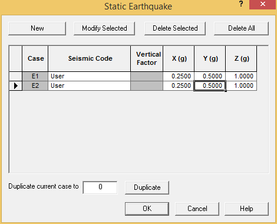

Assigning Static Earthquake Loads
- Select Loads > Environmental > Static Earthquake. The Static Earthquake dialog is displayed.

- Since we do not know what direction the earthquake may come from, it is generally accepted practice to analyze loads coming from at least two different horizontal directions. Press New twice.
- Input the following values:
| Case E1 X | 0.25 | g |
| Case E2 Z | 0.25 | g |
- Press OK to close the dialog.
| Note: |
AutoPIPE also has options to analyze earthquake loads using response spectrum or time history dynamic analysis. |